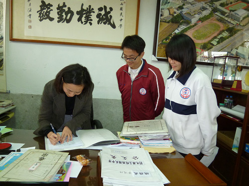

Survey > Questionnaire
The interview is over. To make sure that the residents of the community and students of the school really understand the traditional arts, we decided to make questionnaires as a survey. Certainly, we need to smile to people in order to get the job done, which is our new challenge. Our questions for the questionnaire are as follows:
Questionnaire for off-campus people or adults:
Personal Information: Age _____ Gender: ( ) Male ( ) Female
1. Do you know what is traditional folk art? Which ones do you know?
□Yes,________________________ □No
2. Many people have strived to promote traditional folk art in Hsienhsi. Do you know Hsing-wu Huang?
□Yes,(What does he promote?)________________________ □No
3. Have you been involved in the art of dough?
□Yes,(Do you like it?)________________________ □No
4. Do you know the history of dough (procedure of inheritance)?
□Yes,________________________ □No
5. Do you know another traditional folk art – shadow puppetry?
□Yes,________________________ □No
6. Have you ever played shadow puppetry with your own hands?
□Yes. Afterthought:________________________ □No
7. Comments:
-----------------------Thank you for the cooperation----------------------
From The Flying Art
Questionnaire for Students:
Personal Information: _____Grade Gender: ( ) Male ( ) Female
1. Do you know what is traditional folk art? Which ones do you know?
□Yes,________________________ □No
2. Many people have strived to promote traditional folk art in Hsienhsi. Do you know Hsing-wu Huang?
□Yes,(What does he promote?)________________________ □No
3. Have you been involved in the art of dough?
□Yes,(Do you like it?)________________________ □No
4. Do you know the history of dough (procedure of inheritance)?
□Yes,________________________ □No
5. Do you know another traditional folk art – shadow puppetry?
□Yes,________________________ □No
7. Have you ever played shadow puppetry with your own hands?
□Yes. Afterthought:________________________ □No
8. Comments:
-----------------------Thank you for the cooperation----------------------
 |
←The principal also took our survey. |
(The text and pictures on these pages were based on interview transcriptions, photographs and writing taken by the project team)

|